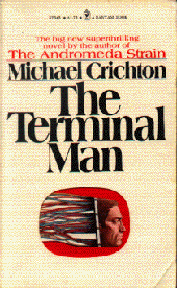

The Terminal Manby Michael Crichton
publisher: Ballantine Books
Fiction, 280 pages | 
(book cover art, Copyright ©1973 Paul Bacon)
Used with Permission. |
Return to the Book MenuPrevious|Next
Description:
A man suffering from violent outbursts of epilepsy undergoes a procedure to have electrodes implanted into his brain, administered by a computer in his shoulder. But how will Harry Benson, a man convinced that computers are taking over the world, respond to having a computer in his mind? (This book was written by the man who created Jurassic Park and ER.)
Recommended for: people interested in medicine and/or psychology, people interested in the growing influence of computers on society, people with questions about medical ethics.
Note: There is a movie based on this book, but make sure you read the book!
Did-you-read questions:
Deadline: February 1, 2005.
These should be easy questions, but you should have the questions ready and keep an eye out during your reading. Each question should be answered with 1-2 sentences.
Note: these questions are not probably not the most important part of the book! Your essay will not have to cover these questions!
- Who are George and Martha?
- What two items are delivered to Harry Benson (along with pajamas, shaving stuff and a book) before his operation?
- Who or what is an "elad"?
- What is Harry's response to the first electrical signal his brain receives?
- When Harry calls Dr. Ross at the hospital, where is he calling from?
Report Questions:Deadline: Peer Review Session on February 8, 2005; paper due February 10, 2005.
You should write a 3 - 4 page essay on one of the following questions. Your essay should include examples and references to the book, unless otherwise specified. Page number references are sufficient for citing material from the primary book. If you use outside materials, cite your sources in full. If you would rather write on a different topic, you may, but clear it with Mr. Howe or Ms. Sullivan first.
- How is the title of this book appropriate? What ideas or themes in the book are associated with the words The Terminal Man?
- As you may find in this book, many things go wrong with the treatment, care and response to Harry Benson. What do you think was the fundamental mistake. You may discuss several theories for the fundamental mistake, but be sure to draw a definitive conclusion.
- This book was written by a man in 1971, at at time when women's place in society was different than it is today. How are women treated in this book, and how is this treatment the same or different today?
- This book discusses many implications of the relationship between man and machine, from the direct (electrodes in the brain) to the indirect (the lack of sidewalk cafes in L. A.). Thirty years later, to what extent are these arguments still valid?
Graphic and Presentation:
Deadline: February 21 - March 3, 2005.You will give a 10 minute presentation on both of the following:
- Convince your peers that they should (or should not) read this book. (This may include a brief summary of the book.) Give examples of what was cool or worthwhile in the book, and what you got out of it (or didn't).
- Describe a (realistic) science idea that you learned about in this book, citing information from at least 2 external sources (other than the dictionary). If you would like help choosing or understanding an idea from your book, you are invited to come talk to Mr. Howe or Ms. Sullivan.
Note: This presentation should not be just a reading of your paper!Along with this presentation, you should have a graphic that will go with it. A Power Point presentation is recommended, but if you have a special idea for a something else, such as a model, an original video presentation, or a well done drawing/ painting/ sculpture/ etc., you may do so, provided it involves a similar level of effort and polish. Speak to Mr. Howe or Ms. Sullivan first if you are considering an alternate graphic format to the Power Point.
Return to the Book MenuPrevious|Next